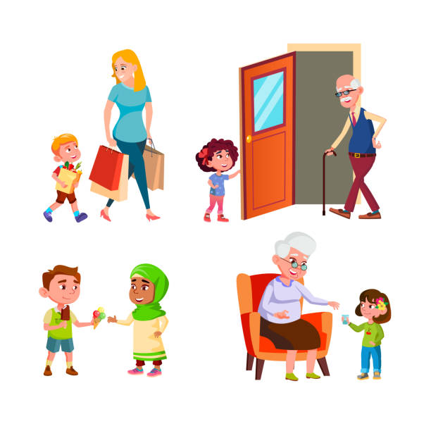
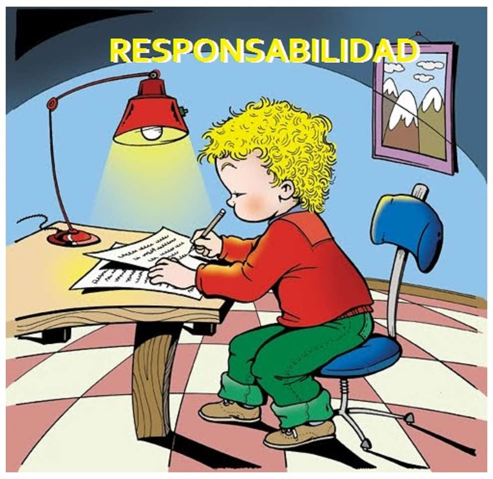
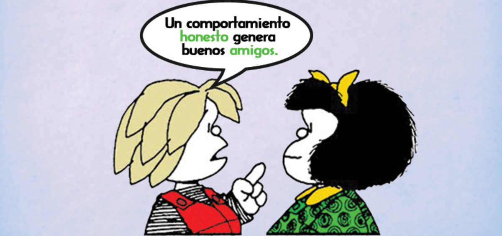

Respeto
Valorar a los demás, sean estudiantes, colaboradores de la universidad u otras personas, reconociendo sus cualidades, sin transgredirles, tratándoles como quisiera ser tratado,
tomando como válido para los demás lo que ellos piensan, valorando lo que hacen, dando paso a sus creencias.

Responsabilidad
Comprometerse de manera consciente con los resultados obtenidos en el cumplimiento de los propósitos misionales de la institución.

Honestidad
Caracterizarnos por un comportamiento decente y coherente entre el actuar, el pensar y decir. Es expresar siempre la verdad.

Compromiso
Trabajar sobre los logros alcanzados y hacia las metas propuestas, creer en lo que se hace y realizarlo con la normatividad establecida.